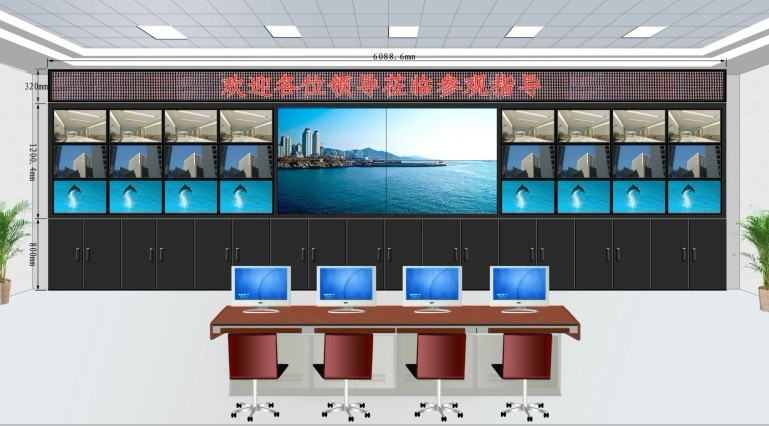

随着液晶拼接屏技术的不断进步，其应用领域也在不断拓展目前已经横跨安防、医疗、广告、教育等众多行业领域，它的重要性也与日剧增。相较于行业的其他显示大屏液晶拼接屏优势明显，尤其是液晶拼接屏的超长使用寿命一直为用户津津乐道如亚威液晶拼接屏采用最新LED背光源技术，工作时间长达10万个小时且性能稳定维护成本低！但是，液晶拼接作为科技含量极高的电子产品，在使用过程中如若受到环境因素的影响，或者因人为操作不当等因素，则可能造成液晶拼接屏使用寿命缩短的问题。那么，在日常生活中应注意哪些问题，从而延长液晶拼接屏的寿命呢?亚威专业技术人工程师就为您秘密透露延迟液晶拼接使用寿命的五大秘诀。

一.关于液晶拼接屏使用环境
1. 需要保证液晶拼接屏安装环境的干净清洁。亚威专业技术员表示，如果屏幕覆盖过多灰尘或者灰尘进入拼接屏内部，会对液晶拼接色轮的性能造成严重影响使得整个液晶拼接屏中间色调的亮度与饱和度降低;同时当液晶拼接表面灰尘积累到一定程度时，会一定程度上改变光线的路径而导致图像显示模糊。
2. 在恰当的温度下使用。液晶屏使用的热致液晶是由温度的变化而衍生出来，并且其光电效应受温度控制，如果温度过高或过低都会出现各种问题甚至会对各元器件造成损坏。所以亚威建议，温度最好设定在25到26摄氏度之间。
3. 避免潮湿。环境潮湿对液晶拼接屏的损坏是非常大的，严重时会造成短路而致后果会不堪想象。所以，定时检查周围环境的湿度显得尤为重要。
二.关于液晶拼接屏日常使用操作注意事项
1. 使用正确规范的液晶拼接屏清洁方法。针对液晶拼接屏表面灰尘可以使用专用的液晶擦拭布在液晶拼接屏幕上轻轻的擦拭；清理屏幕上的油污时需要用专用的液晶擦拭布沾上少许的酒精，然后轻轻的在有油污的区域轻轻的擦拭等；当内部有尘埃时，建议在专业人员的指导下进行清理，切不可擅自处理。
2. 避免长时间显示同一张画面。当液晶拼接屏长时间显示固定画面，有可能会导致某些像素点过热，一旦超过极限会导致永久性损坏。这就形成了常说的"坏点"(某些媒体称为"黑点")。因此，我们在使用时最好在不用到液晶拼接屏时将其关闭。
亚威专业技术工程师表示虽然液晶拼接屏出现故障的几率极低，但是很用户在显示大屏幕出了问题之后才会想到保养，如此不但会给用户的使用带来很多的麻烦，而且从经济方面考虑的话，无疑也会增加很多的使用成本。所以我们需要改变思维，从预防问题开始。【本文由亚威原创发布(www.hnyawei.com) 转载请注明出处】